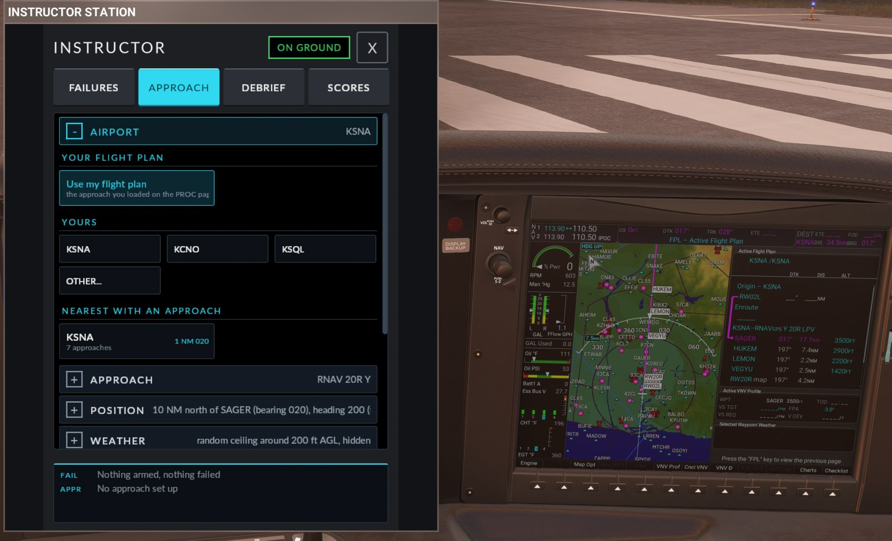

Instructor Station
The Instructor Station is the mod's training tool. It is a panel in the sim's toolbar that does the job of a flight instructor in the right seat: it fails things, puts you on an approach in the weather you ask for, and scores what you did afterwards. It has four tabs: FAILURES, APPROACH, DEBRIEF and SCORES.
You can use the two sides together: arm a failure on the FAILURES tab, set up an approach on the APPROACH tab, press FLY, and the failure waits for its moment during the run.
Opening the panel
Where to find it. With the SR20 loaded, move the mouse to the top of the screen to show the sim's toolbar and click the icon titled Instructor Station. The panel opens as a normal toolbar window: drag it, resize it or pop it out like any other. The face scales to the window, so it stays readable when small.
What you see. The panel looks like a small Garmin screen in a bezel.
| Part | What it shows |
|---|---|
| Header, left | The title INSTRUCTOR |
| Header chip | ON GROUND or IN FLIGHT |
| Header chip (only when something is wrong) | NO PFD when the aircraft's PFD is not answering at all, PFD when only one of the two sides (failures, approach) is answering. Hidden when all is well |
| Header, right | X closes the panel |
| Softkey bar | FAILURES, APPROACH, DEBRIEF, SCORES. The panel reopens on the tab you used last |
| Dot on FAILURES | Red: a failure is active. Amber: a failure is armed |
| Dot on APPROACH | Green: an approach is READY. Amber: a run is being flown. Red: the last setup stopped with an error |
| Footer line FAIL | The failure side at a glance (see below) |
| Footer line APPR | The approach side at a glance (see below) |
| Footer message line | Short confirmations and errors, shown for 5 seconds |
The two footer lines are on every tab, so you always see both sides.
| FAIL line | Meaning |
|---|---|
Nothing armed, nothing failed |
Idle |
<what>, <when> - ARMED (amber) |
One failure is waiting for its trigger. A hidden one reads Hidden failure - ARMED |
<names> - ACTIVE (red) |
These failures are in effect now. Hidden ones read Hidden failure - ACTIVE or 2 hidden failures - ACTIVE |
PFD not answering (red) |
The failure side of the aircraft is not running |
| APPR line | Meaning |
|---|---|
No approach set up |
Idle |
Working... |
The aircraft is answering a request (reading an airport, for example) |
Setting up <approach>: <step> |
A setup is running |
<approach> READY - PAUSED (green) |
Positioned and paused, waiting for FLY |
<approach>: flying in 3 (green) |
The FLY countdown |
<approach>: resuming (green) |
The sim is being unpaused |
Flying <approach> (amber) |
The run is on |
Setup refused: <reason> or Setup incomplete: <reason> (red) |
The setup stopped. See Error messages |
PFD not answering (red) |
The approach side of the aircraft is not running |
Messages in the footer you may see on any tab
| Message | What it means, what to do |
|---|---|
PFD not answering: is the SR20 loaded and powered? |
The panel talks to the PFD. Load the SR20 and power the avionics so the PFD is running |
Sending... |
A command is on its way to the PFD |
The PFD is busy |
The PFD did not become free within 4 seconds. Wait for the current action to end and try again |
The PFD did not take the command |
No answer within 3 seconds. Check that the PFD is on, then try again |
Noted, Revealed, Disarmed, Cancelled, Everything repaired, <name>: failed, <name>: armed, <name>: repaired, Live weather, Weather <description> |
Confirmations of what you just pressed |
Differences from the real aircraft / limits. There is no such panel in a real SR20. Everything it does runs inside the aircraft's PFD, so the PFD must be powered. A mid-flight restart of the flight clears armed and active failures.
FAILURES tab
What it does. It fails aircraft systems for you: at once, in a chosen phase of flight, or at a time you do not know. A failure can be one you picked (practice) or one the panel keeps secret (hidden). Only one failure can be armed at a time. Arming another replaces it. Several failures can be active at the same time.
Words used on this tab
| State | Meaning |
|---|---|
| Armed | The failure is chosen and waiting for its trigger (a phase of flight or a time). Nothing has failed yet |
| Active | The failure has fired and is in effect |
| Hidden | The panel does not name the failure, armed or active, until you press REVEAL or the run ends |
| Repaired | The instructor (you, on the panel) removed the failure. This is not a pilot action and it ends any scoring of that failure |
| Fixed | The pilot's checklist action cured the failure |
Status rows (top of the tab)
These rows appear only when there is something to show.
| Row | Controls |
|---|---|
ARMED <failure>, <when> |
DISARM cancels the armed failure. REVEAL (only for a hidden failure) makes the panel name it |
ACTIVE <failure> (one row per failure, up to four, then and n more) |
REPAIR removes that failure |
| (below the active rows) | REPAIR ALL removes every active failure |
An armed "In the air" failure shows its clock: ALT 1 failure, in the air (clock starts after 1 min above 1000 ft AGL), then (1.5 of 6.2 min). A hidden failure never shows its clock: the row just reads Hidden failure.
When a hidden failure is active, the ACTIVE row reads Hidden failure and has no REPAIR button of its own. Use REPAIR ALL, or REVEAL first.
PRACTICE section
Open PRACTICE to pick a failure yourself. It has three choices, a summary sentence and one button.
WHAT. Six category chips, then the failures of that category:
| Chip | Contents |
|---|---|
| Electrical | Alternators, bus feeds, fuel pump, flap motor, pitot heat, landing light |
| Avionics | AHRS and air data, displays, GIA units, COM 1, transponder, audio panel, autopilot servos |
| Breakers | Nine breakers that trip |
| Engine | One item, Engine failure. The WHEN choice decides which engine scenario you get |
| Run-up | Two items you should catch at the run-up or the takeoff power check |
| Random | The panel draws one failure from a group and hides it: Any (no engine), Any, engine too, Electrical, Avionics, Breakers, Run-up |
A failure that is already active is shown in red in the list.
WHEN.
| Chip | The failure fires |
|---|---|
| Now | At once |
| In the air | At a random time 2 to 10 minutes after the aircraft has been above 1,000 ft AGL for 1 minute. Only time above 1,000 ft AGL counts. Paused time does not count |
| Takeoff roll | On the ground at full throttle, at a random speed between 30 and 55 KIAS |
| After takeoff | Climbing through a random height between 100 and 800 ft AGL |
| In the climb | Climbing through a random height between 1,000 and 3,000 ft AGL |
| On approach | Descending (more than 300 ft/min) through a random height between 500 and 1,500 ft AGL. The aircraft must first have been at least 500 ft above that height after the failure was armed |
Chips that do not apply to your choice are dimmed. Run-up items can only be failed Now; the sentence then reads <name>: "Now" only (it shows at the run-up). and the button reads PICK "NOW".
With Engine failure, the WHEN choice picks the scenario: Now, In the air and On approach give "Engine failure in flight", Takeoff roll gives "Engine failure on the takeoff roll", After takeoff gives "Engine failure after takeoff, low altitude", and In the climb gives "Engine failure in the climb".
CHECKLIST. What the POH checklist action will do. See Remedies. The chips are dimmed for a failure that has no checklist fix.
The summary sentence and the button. The sentence says in plain words what will happen, for example ALT 1 failure, descending through 500-1500 ft AGL. Checklist (ALT 1 switch cycled): the checklist may fix it, fix it for a while, or not. The button below it says what it will do:
| Button | When |
|---|---|
| PICK A FAILURE (greyed) | Nothing chosen yet |
| FAIL IT NOW | WHEN is Now |
ARM: <FAILURE NAME> |
Any other WHEN, nothing armed |
| REPLACE THE ARMED FAILURE | Any other WHEN, and a failure is already armed |
| FAIL A RANDOM ONE NOW / ARM A RANDOM FAILURE | A Random choice |
| TAP AGAIN: THE ENGINE STOPS (amber) | You asked for an engine failure Now while on the ground. Press again within 4 seconds to confirm |
| TAP AGAIN: IT MAY STOP THE ENGINE (amber) | The same, for a Random draw that could be the engine |
After a Random choice the panel says One hidden failure armed. Fly the airplane. or Random failure: failed. Fly the airplane. and the tab switches to the hidden-run view described below. A Random draw is scored as a surprise.
SURPRISE ME section
What it does. The panel picks one failure at random from the categories you tick, and does not say what or when.
| Control | What it does |
|---|---|
| FROM tick boxes | Electrical, Avionics, Breakers, Engine in flight, Engine, also takeoff / climb, Run-up (fires at once). The first three are ticked the first time |
| WHEN, MINUTES IN THE AIR: Not before, Not after | The time window, 5 to 30 minutes at first. Steps of 1 minute up to 10, then 5 minutes, from 1 to 120 |
| CHECKLIST | Random, Fixes it, For a while, Won't fix |
| START HIDDEN FAILURE | Arms it. Reads TICK AT LEAST ONE when nothing is ticked |
The window counts the same way as "In the air": minutes of flight above 1,000 ft AGL, starting 1 minute after you climb through it. If the draw is a takeoff, climb or run-up item, it fires in its own phase instead (a run-up item fires at once).
Two failures are never drawn as a surprise or by Random, because nothing in the cockpit announces them: ESS BUS 1 feed failure and Fuel pump inoperative. You can still pick them in PRACTICE.
Your ticks, the window and the checklist choice are remembered for the next session.
During a hidden run
While a hidden failure is armed or active, the PRACTICE and SURPRISE ME sections are replaced by a red box: A hidden failure is in play. Say it when you see it:
| Control | What it does |
|---|---|
| I HAVE A FAILURE | Press it the moment you notice something wrong. It stops the recognition clock used for scoring. The panel only ever answers NOTED, whether you were right or early. Pressing it before anything has failed counts as a false alarm |
| WHAT IS IT? (BONUS) | Opens the full list of failures by category. Tap what you think failed, or NOT SURE. The panel does not say whether you are right until the run is over. HIDE THE LIST closes it |
| REVEAL (status row) | Names the failure. Use it when you give up or when the exercise is over |
| DISARM (status row) | Cancels a hidden failure that has not fired yet |
| REPAIR ALL (status row) | Removes the failure |
The DEBRIEF and SCORES tabs show nothing about the run until it is over.
The failure scenarios
"Internal failure" in the table means the unit is dead but its breaker stays in. Pulling and resetting the breaker does nothing.
Electrical
| Name | What fails | What you see | Expected response (POH) |
|---|---|---|---|
| ALT 1 failure | Alternator 1 stops charging | ALT 1 caution after about 20 seconds, M BUS 1 on battery 1, BATT 1 caution later | POH §3A ALT 1 Caution: ALT 1 breaker check and set, ALT 1 switch cycle. If not restored: ALT 1 switch off, reduce non-essential loads. Scored |
| ALT 2 failure | Alternator 2 stops charging | ALT 2 caution. ALT 1 carries everything | POH §3A ALT 2 Caution: ALT 2 breaker check and set, ALT 2 switch cycle. If not restored: ALT 2 switch off. Scored |
| Dual alternator failure | Both alternators | ALT 1 and ALT 2 cautions, all buses on the batteries, voltage falling | POH §3A M BUS 2 Caution. Each ALT switch has its own chance of a fix |
| Avionics bus feed failure | The AVIONICS bus is dead with the switch on | AVIONICS OFF caution. Transponder, audio panel and datalink off | POH §3A AVIONICS OFF Caution: AVIONICS switch off, then on |
| ESS BUS 1 feed failure | ESS BUS 1 is fed by battery 2 only | No message at first | No checklist. Systems knowledge |
| Fuel pump inoperative | Internal failure of the fuel pump | No annunciation. The only cue is the missing sound of the pump (POH §7 Fuel Pump Operation) | No checklist fix |
| Flap motor failure | Internal failure of the flap motor | The flap switch moves, the flaps stay where they are | No checklist fix. Land with the flaps you have |
| Pitot heat failure | Internal failure of the pitot heater | Pitot heat does not work | No checklist fix |
| Landing light failure | Internal failure of the landing light | No landing light | No checklist fix |
Avionics
| Name | What fails | What you see | Expected response (POH) |
|---|---|---|---|
| AHRS and air data failure | Attitude, heading and air data | Red X on attitude, heading, airspeed and altitude | POH §3 AHRS / ADC Failure. Fly the standby instruments |
| PFD display failure | The PFD | The PFD goes dark, its breakers stay in | POH §3 PFD Display Failure: DISPLAY BACKUP |
| MFD display failure | The MFD | The MFD goes dark. The PFD goes to reversionary mode by itself | No checklist fix |
| GIA 1 failure (COM 1, NAV 1, GPS 1) | Integrated avionics unit 1 | COM 1, NAV 1 and GPS 1 lost | No checklist fix. Use the number 2 side |
| GIA 2 failure (COM 2, NAV 2, GPS 2) | Integrated avionics unit 2 | COM 2, NAV 2 and GPS 2 lost | No checklist fix. Use the number 1 side |
| COM 1 failure | COM 1 radio | COM 1 dead | No checklist fix. Use COM 2 |
| Transponder failure | Transponder | Transponder off | No checklist fix |
| Audio panel failure | Audio panel | Audio panel off | No checklist fix |
| Autopilot servo failure | Autopilot servos | The autopilot cannot fly the aircraft | No checklist fix. Hand-fly |
Breakers. The breaker pops. You see it out on the SR20 Breakers panel and the system it feeds stops.
| Name | Expected response (POH) |
|---|---|
| FUEL PUMP breaker trips, FLAPS breaker trips, PITOT HEAT breaker trips, LANDING LIGHT breaker trips, COM 1 breaker trips, AP SERVOS breaker trips, XPONDER breaker trips, STROBE breaker trips, NAV LIGHTS breaker trips | POH §3 Circuit Breakers: reset a tripped breaker once only. The reset may hold, hold for a while, or the breaker trips again 2 seconds later (a short). A shorted breaker trips again at most three times |
Engine
| Name | When it fires | What you see | Expected response (POH) |
|---|---|---|---|
| Engine failure in flight | Now, in the air, or on approach | The engine stops, OIL PRESS | POH §3 Engine Failure In Flight: best glide, mixture as required, switch tanks, fuel pump on, alternate induction air on, ignition both. If no restart: Engine Airstart. Scored |
| Engine failure on the takeoff roll | 30 to 55 KIAS at full throttle on the ground | The engine stops before rotation | POH §3 Engine Failure On Takeoff: abort on the runway. No fix |
| Engine failure after takeoff, low altitude | Climbing through 100 to 800 ft AGL | The engine stops in the initial climb | POH §3 Engine Failure On Takeoff, Low Altitude. No fix |
| Engine failure in the climb | Climbing through 1,000 to 3,000 ft AGL | The engine stops, the propeller windmills | POH §3 Engine Failure In Flight, as above. Scored |
An engine failure in flight or in the climb has one hidden cause, drawn when it fires: fuel in one tank only (cure: switch tanks), fuel vapour (cure: fuel pump on; only drawn if the pump was off), or mixture (cure: lean, then enrich). Only the action that matches the cause can restart the engine, and only if the CHECKLIST outcome allows it.
"Fuel pump on" means the fuel pump switch forward at BOOST. The centre position is off, and the aft PRIME position springs back to BOOST.
Run-up
| Name | What fails | What you see | Expected response (POH) |
|---|---|---|---|
| Low full-throttle RPM (2600) | The governor is capped at 2,600 RPM | 2,600 RPM at full throttle instead of about 2,700 | POH §4 Takeoff Power Check: reject the takeoff |
| Low full-throttle fuel flow | The engine runs leaned to 80 % with the mixture lever full forward | Fuel flow below the top of the green arc at full power | POH §4 Takeoff: reject the takeoff |
Remedies: what the checklist does
When a failure with a checklist fix fires, the outcome of the fix is decided at that moment and kept secret.
| CHECKLIST chip | What the checklist action does |
|---|---|
| Fixes it | The action cures the failure |
| For a while | The action cures it for 1 to 3 minutes, then the failure comes back for good |
| Won't fix | The action has no effect. For a breaker: it trips again 2 seconds after each reset |
| Random | One of the three, drawn when the failure fires: about half the time it fixes it, a quarter for a while, a quarter not at all |
Trying the action again does not draw again. The actions the aircraft recognises:
| Failure | The action that may fix it |
|---|---|
| ALT 1 failure, ALT 2 failure | That ALT switch off for at least 1 second, then on |
| Dual alternator failure | Each ALT switch, each with its own outcome |
| Avionics bus feed failure | AVIONICS switch off for at least 1 second, then on |
| Any breaker trip | Reset the breaker |
| Engine failure in flight, Engine failure in the climb | The action that matches the hidden cause: switch tanks, fuel pump on, or mixture leaned below half and then back to rich |
All other failures have no checklist fix: only REPAIR on the panel removes them.
Clearing and resetting
| You want to | Do this |
|---|---|
| Cancel a failure that has not fired | DISARM |
| Remove one active failure | REPAIR on its row. A popped breaker goes back in |
| Remove everything | REPAIR ALL |
| See what a hidden failure is | REVEAL |
| Start clean | Restart the flight. Armed and active failures are cleared |
After you repair an engine failure the engine does not start by itself: restart it.
A REPAIR or DISARM during a scored failure ends the scoring of it as "aborted". It does not go on the leaderboard.
Differences from the real aircraft / limits. Not modelled: pitot or static blockage, brake failures, single-ADAHRS failures, oil pressure or temperature indications, rough running and magneto faults. Steps the sim cannot see are not checked.
APPROACH tab
What it does. It sets up one instrument approach for you: you choose the airport, the approach, where to start and the weather. The aircraft is then placed in the air at that spot, on speed, with the avionics set, and the sim is paused until you press FLY. It works in flight and from the ramp.

The tab has four sections that open one at a time: AIRPORT, APPROACH, POSITION, WEATHER. Each header shows what is chosen. Below them are the summary sentence and the buttons SET UP and SET WEATHER NOW. Nothing happens to the aircraft until you press SET UP.
Your choices under POSITION and WEATHER are remembered between sessions. The airport and the approach are not.
Step 1: AIRPORT
| Part | What it does |
|---|---|
| YOUR FLIGHT PLAN: Use my flight plan | Uses the approach you loaded on the PROC page. Nothing in the G1000 is changed. See Use my flight plan |
| YOURS | Up to six airports: KSNA, KCNO and KSQL to begin with, then the last four airports you set up an approach at |
| OTHER... | A keypad for any airport: four slots, A to Z and 0 to 9, DELETE, BACK, and LIST APPROACHES (needs at least three characters) |
| NEAREST WITH AN APPROACH | Up to six airports within 60 NM of the aircraft that have an instrument approach, closest first. Each tile shows the identifier, the number of approaches, and the distance and magnetic bearing, for example 12 NM 045. Shows searching... while it looks and none within 60 NM when there is none |
Tap an airport. The panel reads its approaches and opens the APPROACH section.
Step 2: APPROACH
The header reads <ICAO>, ELEVATION <n> FT. There is one tile per approach (up to 24), named as on the PROC page, for example ILS 20R or RNAV 20R Z.
| Under the name | Meaning |
|---|---|
FAF 2,400 ft, final 196 |
Supported. The numbers are the FAF altitude and the final approach course (magnetic) that the setup will use |
procedure only: final leg type |
The final segment is not a plain straight leg. Not available with Quick intercept. Available with "A fix of the approach" |
not supported: no positioned FAF |
The nav data has no usable final approach fix. Available only from a fix |
not supported: no positioned MAP |
No usable missed approach point, or it is less than 0.5 NM from the FAF. Available only from a fix |
not supported: no FAF altitude |
The FAF has no altitude in the nav data. Available only from a fix |
circling: no runway |
A circling-only approach (VOR A, for example). Not available |
not supported: approach type |
NDB, NDB/DME, SDF, LDA and localizer back course approaches. Not available |
The supported types are ILS, LOC, RNAV, GPS, VOR and VOR/DME to a runway.
Tiles you cannot use with the current START FROM choice are dimmed. If you pick one anyway, the summary reads <approach> cannot be placed: <reason>. and the button reads PICK A SUPPORTED APPROACH.
Other messages in this section: Pick an airport first., Reading the approaches of <ICAO>..., No approach found at <ICAO>. (the airport has no instrument approach, or the identifier does not exist).
Tap an approach. The POSITION section opens.
Step 3: POSITION
START FROM has two modes.
Quick intercept
"Straight-in or 45 to the final". This is the vectors-to-final start.
| Control | Choices |
|---|---|
| INTERCEPT | Straight-in: on the final approach course, heading inbound. 45 left or 45 right: on a 45 degree intercept heading from that side. The intercept point is 2 NM before the FAF |
| Distance | 3 to 15 NM in 1 NM steps. Labelled Distance before the FAF for straight-in, Intercept leg (ends 2 NM before the FAF) for a 45 degree intercept |
| ALTITUDE | FAF altitude (rounded up to 100 ft), or Set with a stepper in 100 ft steps. Allowed: from the airport elevation plus 1,500 ft up to the FAF altitude plus 3,000 ft, and not below the FAF altitude |
A fix of the approach
"IAF, IF, FAF: bearing, distance". Starting from a fix needs the Companion (for the terrain check). Use it to appear anywhere around the procedure, as if you were arriving and about to be cleared for the approach.
| Control | Choices |
|---|---|
| TRANSITION | Shown when the approach has more than one. Each is named by its first fix |
| FIX | Every fix of the transition and the final, up to the missed approach point. Each tile shows the role (IAF, IF, FAF, MAP or fix), the published altitude if there is one, and hold for a hold or procedure turn |
| Sketch | A small north-up drawing of the fixes, your start point (you) and your heading. It is schematic: straight lines between fixes |
| WHERE: Bearing from the fix | Magnetic, in 10 degree steps. This is the bearing from the fix to you |
| WHERE: Distance from the fix | 0 to 30 NM. 0 puts you over the fix |
| HEADING | Toward the fix (the tile shows the heading), or Set with a stepper in 10 degree steps |
| ALTITUDE | Fix altitude (the published altitude; Fix altitude: none published means you must set one), or Set with a stepper in 100 ft steps, from the airport elevation plus 1,000 ft up to 12,500 ft |
| CLEARANCE | Loaded ("you activate it"): the approach with this transition is put in the flight plan, and you activate it as you would after a clearance. Direct to <fix> ("active Direct-To"): a Direct-To to the fix is made from your new position. Vectors to final ("VTF active"): only for approaches with a supported straight final |
When you pick a fix, the panel proposes a start on the extended inbound course to that fix, heading toward it, at its published altitude. The line under the sketch reads, for example, 12 NM northeast of KRAIN (bearing 050), heading 230 toward KRAIN, 5,000 ft, 110 kt, Direct-To KRAIN.
SPEED
Speed: 90 to 130 KIAS in 5 kt steps.
HAND-OVER
| Choice | Meaning |
|---|---|
| Autopilot on ("HDG + ALT, you couple it") | You get the aircraft with the autopilot flying heading and altitude. Press APR or NAV yourself when you want it coupled |
| Autopilot off ("hand-flown from the start") | The setup steadies the aircraft on the autopilot, then switches it off silently before handing over |
| Paused until FLY ("look around first") | The sim is paused at the end of the setup. You brief, then press FLY |
| Go at once ("no pause") | The run starts as soon as the aircraft is steady |
| Engine as it is ("from the ramp: start it yourself") | A ramp start needs a running engine |
| Auto-start ("from the ramp, engine off") | A ramp start uses the sim's engine auto-start first (it waits up to 30 seconds) |
Use my flight plan
Enter your flight plan in the G1000, load the approach and its transition on the PROC page, then press Use my flight plan in the AIRPORT section. The panel reads the airport, the approach and the transition from your flight plan and opens POSITION with the fixes of what you loaded. If you loaded vectors-to-final, you get the fixes of the final.
- Quick intercept is dimmed (
not with your flight plan: start from a fix), and there is no TRANSITION or CLEARANCE choice. - The note reads
From your flight plan: the approach and transition you loaded. The flight plan, the radios and the CDI stay as you set them. - SET UP moves the aircraft and sets the weather, the altimeters, the heading bug, the altitude selector and the autopilot. It does not insert, activate or change anything in the flight plan, and it leaves NAV1 and the CDI alone.
- With no approach in the flight plan the note turns amber:
No approach is loaded in your flight plan. Load one on the MFD (PROC), then press Use my flight plan again.
Picking an airport or an approach tile on the panel leaves this mode.
Step 4: WEATHER
| Choice | What you get |
|---|---|
| Keep as it is | The weather is not touched. The altimeters are not touched either |
| Live weather | The sim's live weather. The altimeters are set to the live pressure |
| Overcast, base at | One solid cloud layer, 2,500 ft thick, with its base where you set Cloud base (100 to 3,000 ft AGL, 100 ft steps). Altimeter 29.92 |
| Random, around | The same solid layer, with its base drawn at random between 300 ft below and 700 ft above the Around value you set (100 to 1,500 ft AGL, 50 ft steps), never below 100 ft. Altimeter drawn between 29.70 and 30.20 |
The note under Random, around says: The ceiling lands somewhere around the reference: sometimes you break out early, sometimes not at all. The reference is a training number, never a published minimum. Set it to the DA or MDA height you are training for.
SECRECY (Overcast and Random only)
| Choice | Meaning |
|---|---|
| Show the numbers | Base, wind and altimeter are shown on the READY banner |
| Hidden ("until the debrief: fly it like real IMC") | The numbers are withheld until the run ends. The altimeters are still set to the right pressure for you |
WIND (Overcast and Random only)
| Choice | Meaning |
|---|---|
| Light, from the manager | A random direction at 2 to 8 kt |
| Set it | From (10 degree steps) and Speed. Set 20 kt or less: the stepper goes to 25, but a setup with more than 20 kt is refused with bad weather request |
The summary sentence and SET UP
Above the button, one sentence says exactly what will happen, for example:
RNAV 20R Z at KSNA, 45 left, 8 NM, FAF altitude (2,400 ft), 110 kt, AP on. Weather overcast, base 300 ft AGL, shown. Paused until you press FLY.
From a fix, the sentence ends with Refused if terrain within 3 NM, or 5 NM ahead, is less than 1,000 ft below. On the ground it adds From the ramp: lifts you off and places you; CANCEL before FLY puts you back here.
The button names what it will do: SET UP <APPROACH> (for example SET UP RNAV 20R Z), or SET UP AT <FIX> when starting from a fix. While something is missing it is greyed and tells you what:
| Button text | The sentence says |
|---|---|
| PICK AN AIRPORT | Pick an airport. |
| PICK AN APPROACH | Pick an approach at <ICAO>. |
| PICK A SUPPORTED APPROACH | <approach> cannot be placed: <reason>. |
| PICK ANOTHER APPROACH | <approach> cannot be set up: <reason>. (from a fix: circling or an unsupported type) |
| READING THE FIXES | Reading the fixes of <approach>... |
| PICK A FIX | Pick the fix to start from. |
| SET AN ALTITUDE | <fix> has no published altitude: set one under ALTITUDE. |
| PICK ANOTHER CLEARANCE | Vectors to final needs a straight-in final; <approach> is <reason>. |
| START THE ENGINE FIRST | From the ramp: the engine is not running. Start it, or pick Auto-start under HAND-OVER. |
SET WEATHER NOW
This button (shown unless the weather choice is Keep as it is) applies the weather of the WEATHER section without moving the aircraft. It does not set the altimeters: set the baro yourself.
What the setup does to the aircraft
After SET UP, in this order:
- Checks. The airport, the approach, the geometry, the altitude, the speed and the weather request are checked. From a fix, the terrain is checked too. If anything is wrong the setup is refused and nothing has changed.
- Engine (ramp start only). The engine must be running steadily for 3 seconds. With Auto-start, the sim's auto-start is used first.
- Flight plan. With Quick intercept, or the Vectors to final clearance, the approach is loaded at the airport and vectors-to-final is activated. With Loaded or Direct to, the approach is loaded with the transition you chose. With Use my flight plan, nothing is touched.
- Nav source. For a vectors-to-final setup: on an ILS, LOC, VOR or VOR/DME approach, NAV1 is tuned to the approach's facility and the CDI is set to NAV1. On an RNAV or GPS approach the CDI is set to GPS. For a setup on a transition (Loaded or Direct to) the CDI is set to GPS, and a localizer or VOR frequency is put in NAV1 for later without switching the CDI. With Use my flight plan, nothing is touched.
- Weather and altimeters. The weather is applied. Unless you chose Keep as it is, both altimeters are set to the new sea level pressure, also when the weather is hidden.
- Position. The aircraft is placed at the chosen point: flaps up, power for level flight at the chosen speed, heading bug on the start heading, altitude selector on the start altitude. From the ramp the parking brake is released and the mixture is set rich first.
- Stabilise. The autopilot is engaged in HDG and ALT for 4 seconds to settle the aircraft. If you chose Autopilot off, it is then disconnected without the disconnect tone.
- Direct-To (that clearance only). The Direct-To to your fix is made from the new position.
- Pause. With Paused until FLY the sim is paused and the banner turns green.
The power setting is approximate and is set once. Take over the throttle as soon as you fly.
The terrain check (needs the Companion)
When you start from a fix, the setup asks the SR20 Companion for the highest terrain within 3 NM of the start point and in a corridor 5 NM ahead of it. The setup is refused if that terrain is less than 1,000 ft below your start altitude, or if the terrain is not known. The Companion must be running. At an airport you have not visited, the terrain data is downloaded when you pick the airport, which takes a few seconds the first time; the setup waits up to 8 seconds for it.
Quick intercept does not use the terrain check. Its safety floor is the altitude rule: at least the airport elevation plus 1,500 ft, and never below the FAF altitude.
The run banner
After SET UP a box appears at the top of the APPROACH tab and follows the run from start to finish.
| Banner title | What it shows | Buttons |
|---|---|---|
SETTING UP <APPROACH> |
Step n of 11: <step> and a progress bar. The steps are: resolving, validating, engine, weather snapshot, loading the plan, nav source, weather, placing, stabilising, pausing, done |
CANCEL |
| READY - PAUSED (green) | The approach and start position (, from the ramp if so). Positioned and paused. Look around, then press FLY. Then Handed over at 2,400 ft, 110 KIAS, heading bug 151, autopilot on (HDG + ALT), NAV1 111.75. and the weather line. If it has waited more than 90 seconds: Set up n min ago and waiting. |
FLY, CANCEL, ? |
| FLYING IN 3 (then 2, 1) | Hands on: the sim unpauses at zero. |
The FLY button shows the count. CANCEL still works |
| RESUMING | The sim is being unpaused | |
FLYING <APPROACH> (amber) |
The weather line, only when the setup made the weather | END THE RUN, ?, and, when the setup made the weather, WEATHER LIVE and DEBRIEF |
| SETUP REFUSED - NOTHING CHANGED (red) | Stopped at <step>: <reason>. |
OK, ? |
| SETUP INCOMPLETE - REMAIN PAUSED (red) | Stopped at <step>: <reason>. and Weather restored if it had been changed. Fix the form and try again. (Back on the ramp. first, after a ramp start) |
OK, ? |
The weather line reads one of: Weather as it was, Live weather, Weather made up for this run: base 300 ft AGL, wind 240/6, altimeter 29.92, or Weather made up for this run, hidden until it ends.
If a failure is armed or active, an amber line is added: With a failure: ALT 1 failure, descending through 500-1500 ft AGL, With a failure: Hidden failure armed or With a failure: Failure active.
The buttons
| Button | What it does |
|---|---|
| FLY | Starts the run. The button reads STARTING..., then the banner counts FLYING IN 3, 2, 1 and the sim unpauses. One press is enough: a second press is ignored. Armed failures and the scoring start counting here, not before |
| CANCEL (while setting up or at READY) | Stops the setup. In the air you stay where you are, paused, and nothing is started: unpause with the sim's pause key. After a ramp start the aircraft is put back on its ramp spot with the parking brake set, the engine at idle and the autopilot off. The hint under the buttons says which: CANCEL: back to the ramp. or CANCEL: stay paused here, nothing started. |
| END THE RUN (while flying) | Ends the run without a landing. If the setup made the weather, hidden weather is revealed and live weather comes back. The aircraft is not moved. The hint reads END THE RUN: done without landing (hidden weather revealed, live weather back). Landing ends it too. |
| WEATHER LIVE | Gives the sim's live weather back at any time and sets the altimeters to it. It also lifts the secrecy |
| DEBRIEF | Opens the DEBRIEF tab |
| OK (after an error) | Clears the error. If the setup had changed the weather, live weather is restored |
| ? | Shows or hides this help text in the banner: This box follows one approach run, from SET UP to the landing. FLY starts it: the countdown, then the sim unpauses; failures armed for the approach and the scoring start there. Weather the setup made up (Overcast / Random) can be hidden until the run ends: land, or press END THE RUN, then DEBRIEF shows what it was. WEATHER LIVE gives the real weather back at any time. |
A landing (on the ground below 40 KIAS) ends the run for the debrief, so hidden weather can then be read on the DEBRIEF tab. The banner stays up and the weather stays as it is until you press END THE RUN or set up another approach.
A new SET UP while a run is on replaces it.
From the ramp or in flight
In flight. Press SET UP at any time. The aircraft is moved from where it is to the start point. CANCEL before FLY leaves you at the start point, paused.
From the ramp. You can press SET UP while parked: the setup lifts the aircraft off the ramp and places it. The conditions:
- The engine must be running, or Auto-start must be chosen.
- The aircraft must be standing still (3 kt or less).
- CANCEL before FLY, or a setup that fails after the aircraft has moved, puts the aircraft back on the ramp spot where it stood. After FLY nothing moves it back.
Error messages
A setup that is refused during the checks changes nothing (SETUP REFUSED - NOTHING CHANGED). One that stops later may already have loaded the flight plan, changed the weather or moved the aircraft (SETUP INCOMPLETE - REMAIN PAUSED). In the air, after a failed placement the sim is left paused where the aircraft is. Press OK, then unpause with the sim's pause key if you need to.
| Reason shown | What it means, what to do |
|---|---|
the PFD is busy |
Another request is still running. Wait and try again |
airport not found |
The identifier is not in the sim's nav data. Check it |
list the airport first / stale list (pick the airport again) / bad approach index |
The panel's approach list is out of date. Pick the airport again, then the approach |
approach not supported for this setup |
The approach cannot be used with this START FROM or clearance. Pick another approach, or start from a fix |
intercept must be straight-in, 45 left or 45 right |
Pick one of the three under INTERCEPT |
distance 3-15 NM |
Quick intercept distance out of range (from a fix: 0 to 30 NM) |
altitude outside the envelope |
The start altitude is too low or too high. Quick intercept: between the airport elevation plus 1,500 ft and the FAF altitude plus 3,000 ft, and not below the FAF altitude. From a fix: between the airport elevation plus 1,000 ft and 12,500 ft |
speed 90-130 KIAS |
Speed out of range |
flight plan load failed |
The G1000 did not accept the approach. Try again; if it repeats, load the approach yourself and use Use my flight plan |
weather failed |
The sim did not accept the weather. Try again, or choose Keep as it is |
placement failed |
The aircraft could not be placed within 20 seconds. Press OK and try again |
unstable after placement |
The aircraft was not flying steadily after the 4 seconds on the autopilot. Press OK and try again |
cancelled |
You pressed CANCEL |
no FMS |
The avionics are not ready. Power the PFD and wait for it to finish starting |
bad weather request |
A weather value is out of range. Wind speed must be 20 kt or less |
not ready |
FLY was pressed when nothing was READY |
hidden until the run ends |
Shown on the DEBRIEF tab while a hidden run is on |
nav source / NAV1 not set |
The CDI or NAV1 could not be set for the approach. Try again |
the engine is not running: start it, or pick Auto-start |
Ramp start with the engine off |
auto-start did not get the engine running |
The auto-start did not produce a running engine within 30 seconds. Start the engine yourself |
rolling: stop first |
Ramp start while moving. Stop the aircraft |
no such fix (describe again) / the fix list changed: pick again |
The fix list is out of date. Pick the approach again, then the fix |
this fix has no altitude: set one |
Choose Set under ALTITUDE |
terrain less than 1,000 ft below: climb or move |
The terrain check refused the start point. Set a higher altitude, or move the start point |
terrain unknown (is the SR20 Companion running?) |
The Companion did not answer, or the terrain is still downloading. Start the Companion, wait a few seconds, try again |
no approach loaded in your flight plan |
Use my flight plan found no approach. Load one on the PROC page |
your flight plan changed: press YOUR FLIGHT PLAN again |
You changed the PROC page after the panel read it. Press Use my flight plan again |
Two more messages can appear in the footer: The PFD has not taken FLY yet: is the PFD on? (no answer 2.5 seconds after FLY: check that the PFD is powered, then press FLY again) and The PFD did not take the command.
Differences from the real aircraft / limits. The setup is an instructor's reposition, as in a simulator. Arrivals, time of day and circling approaches are not part of it. Start points are not checked against airspace or obstacles. Favourite airports cannot be edited on the panel.
DEBRIEF tab
What it does. It tells you what the instructor did to you: the weather of the approach run and the list of failure events.
APPROACH
When you open the tab it asks the aircraft (Asking the PFD...) and then shows:
| Line | Meaning |
|---|---|
No approach set up this flight. |
Nothing to report |
Weather was kept or live. |
The setup did not make the weather |
Overcast, base 300 ft AGL, tops 2,800 ft. or Random ceiling, base 420 ft AGL, tops 2,920 ft. |
The cloud layer the setup made |
Wind 240 at 6, altimeter 29.92, training reference 200 ft AGL. |
Wind and altimeter. The reference is shown for Random weather only |
Run: ready. / started. / landed. / aborted. / replaced. |
How the run ended. aborted means CANCEL or END THE RUN; replaced means a new setup took its place |
Weather hidden until the run ends (land, cancel, or set up again). (amber) |
A hidden run is still on. Hidden weather is revealed when you land, press END THE RUN or CANCEL, press WEATHER LIVE, or set up another approach |
REFRESH asks again. WEATHER LIVE gives the live weather back.
FAILURES
A list of what happened, newest first (the last 12 events). Each row has a time counted from the first event in the list, what happened, the failure name, and for most events the height and speed at that moment.
| Word | Meaning |
|---|---|
| Armed / Disarmed | The instructor armed or cancelled it |
| Failed | The failure fired, for example Failed ALT 1 failure 1,240 ft AGL, 108 KIAS |
| Fixed | Your checklist action cured it, for example Fixed ALT 1 failure ALT 1 switch cycled. 1,180 ft AGL, 106 KIAS. A fix that will only last a while also reads Fixed |
| No effect | Your checklist action did nothing |
| Failed again | A fix that held for a while has given up |
| Tripped again | A reset breaker popped again |
| Repaired | The instructor removed it with REPAIR |
The actions are named ALT 1 switch cycled, ALT 2 switch cycled, AVIONICS switch cycled, breaker reset, fuel tanks switched, fuel pump on and mixture leaned, then enriched.
While a hidden failure is armed or active the list is replaced by A hidden failure is still armed or active. Reveal it to see the debrief. and the button REVEAL THE HIDDEN FAILURE. With no events the list reads No failure events this flight.
SCORES tab
What it does. It grades how you handled a failure against the POH procedure. Four failures are scored: ALT 1 failure, ALT 2 failure, Engine failure in flight and Engine failure in the climb. All other failures are for practice only and leave no score.
What is scored
A score is out of 100, with a grade: A from 90, B from 80, C from 70, D from 60, F below.
| Part | Surprise (hidden) | Practice | How it is measured |
|---|---|---|---|
| Recognition | 25 | not scored | Time from the moment the failure shows (the CAS caution for an alternator, the failure itself for the engine) to your I HAVE A FAILURE or your first checklist action. Alternator: full marks within 15 seconds, none after 90. Engine: full marks within 5 seconds, none after 30 |
| Procedure | 40 | 53.3 | The POH steps, done or missed. The list follows what really happened: if cycling the ALT switch restored the alternator, the "not restored" steps are not required. A step done out of order costs 5 points. A wrong action costs 5 points (cycling the healthy alternator, resetting a breaker a second time after it tripped again, engaging the starter with the propeller windmilling) |
| Timeliness | 15 | 20 | Time from recognition to milestones. Alternator: switch cycled within 30 seconds, the "not restored" steps within 90. Engine: best glide within 10 seconds, tanks and pump within 30, the checklist within 60. Full marks within the target, none at three times the target |
| Control | 20 | 26.7 | How well you flew meanwhile. Level with the autopilot off: within 100 ft and 10 degrees of where you were. Autopilot on: within 100 ft and 10 degrees of its targets. Climbing: within 10 KIAS and 30 degrees of bank. Engine out: within 5 KIAS of best glide (92 KIAS at 2,600 lb to 100 KIAS at 3,150 lb, POH §3), until you extend flaps or pass 1,000 ft AGL. Each stall, overspeed, bank beyond 60 degrees or G beyond -0.5 / +3.0 costs 8 points |
| Diagnosis | +5 bonus | none | You named the right failure under WHAT IS IT? (BONUS) |
| False alarm | -2 each | -2 each | I HAVE A FAILURE pressed before anything had failed |
A run is a Surprise when the failure was hidden (SURPRISE ME, or a Random draw in PRACTICE) and a Practice when you picked it yourself.
The record is closed 60 seconds after the last required step, at landing, or on a timeout (10 minutes after recognition, 15 minutes after the failure showed). A crash scores 0.
Steps the sim cannot observe are listed without points.
Reading the page
BEST. One block per scored failure, with a line for Surprise and a line for Practice:
Surprise: best 92.5, recognised in 8 s, avg 85.0, streak 3 (7)
| Item | Meaning |
|---|---|
best |
Your best score |
recognised in |
Your fastest recognition |
avg |
The average of your last 10 scores |
streak |
Scores of 80 or more in a row (shown from 2) |
(7) |
The number of events |
no events |
Nothing yet |
RECENT. The last five records, newest first. Each shows the failure and mode, the score and grade on the right, the parts (Recognition 21.5 (18 s) / Procedure 40 / Timeliness 12.3 / Control 20, with Diagnosis +5 and False alarm -2 when they apply), and a note line: how the event ended (completed, landed, timed out, flight ended, aborted, crashed) and any flags (2 wrong actions, 1 out of order, 1 safety, not on the leaderboard).
Tap a record to see its POH steps, tap it again to go back. Each step carries one word:
| Word | Meaning |
|---|---|
done |
You did it |
MISSED (red) |
Required and not done |
already set |
It was already in the right position when the failure fired. No points either way |
not required |
Not needed for what happened (for example the "not restored" steps after a successful reset) |
not checked |
The sim cannot see this control |
not scored |
Listed for completeness, no points |
With no records the page reads No scored events yet. Scored: ALT 1, ALT 2, engine failure in flight or in the climb.
During a hidden run the page shows only A hidden failure is still armed or active. Scores after the run (Reveal or Repair ends it).
Not on the leaderboard
A record is kept but does not count for BEST when the event was not a fair test: the instructor pressed REPAIR or DISARM, the flight was restarted, the sim rate was not 1x, slew or replay was used, or a second failure fired while the event was open.
How history is kept
The last 50 records are stored with the sim's saved data, so they are there the next time you fly. The page shows the newest five, and the BEST lines cover all 50. Older records drop off the end. There is no button to clear the history in this version.
Worked example
Task: fly the RNAV 20R at KSNA from vectors, with a 300 ft ceiling and an alternator failure you are not expecting.
Start anywhere: in flight, or parked with the engine running. The SR20 Companion is not needed for this one.
- Open the toolbar and click Instructor Station.
- Press the FAILURES softkey. Open PRACTICE.
- Under WHAT, press Electrical, then ALT 1 failure.
- Under WHEN, press On approach.
- Under CHECKLIST, press Random. The sentence now reads
ALT 1 failure, descending through 500-1500 ft AGL. Checklist (ALT 1 switch cycled): the checklist may fix it, fix it for a while, or not. - Press ARM: ALT 1 FAILURE. The footer shows
FAIL ALT 1 failure, descending through 500-1500 ft AGL - ARMED. - Press the APPROACH softkey. Open AIRPORT and press KSNA. The APPROACH section opens with
KSNA, ELEVATION ... FT. - Press the RNAV 20R tile. It is named as on the PROC page, with its letter if it has one (for example RNAV 20R Z). The POSITION section opens.
- Under START FROM, press Quick intercept. Under INTERCEPT, press 45 left or 45 right. Set the Intercept leg to 8 NM with - and +.
- Under ALTITUDE, press FAF altitude. Set Speed to 110 KIAS.
- Under HAND-OVER, press Autopilot on and Paused until FLY. If you are parked with the engine off, press Auto-start too.
- Open WEATHER. Press Overcast, base at and set Cloud base to 300 ft AGL. Under SECRECY, press Show the numbers. Under WIND, press Light, from the manager.
- Read the summary sentence. It should read like
RNAV 20R Z at KSNA, 45 left, 8 NM, FAF altitude (...), 110 kt, AP on. Weather overcast, base 300 ft AGL, shown. Paused until you press FLY. - Press SET UP RNAV 20R Z. The banner shows SETTING UP with the steps and the progress bar.
- When the banner turns green and reads READY - PAUSED, look around: the approach is loaded with vectors-to-final active, the CDI is on GPS, the altimeters are set, the heading bug is on the intercept heading and the autopilot is in HDG and ALT. The amber line reads
With a failure: ALT 1 failure, descending through 500-1500 ft AGL. - Brief the approach, then press FLY. The banner counts FLYING IN 3, 2, 1 and the sim unpauses.
- Press APR on the autopilot to capture the final, and fly the approach. Take over the throttle.
- Somewhere between 1,500 and 500 ft AGL in the descent, the ALT 1 caution appears. Run the POH procedure: ALT 1 breaker check and set, ALT 1 switch cycle, and if it does not come back, ALT 1 switch off and loads reduced.
- Land, or go missed. Press END THE RUN to close the run and get live weather back.
- Press DEBRIEF to see the weather and the failure events, then SCORES to see your Practice score for ALT 1. Tap the record for the step list.
To make it a real surprise, replace steps 3 to 6: under WHAT press Random, then Electrical, keep On approach, and press ARM A RANDOM FAILURE. The panel then draws one electrical failure (an alternator, or another electrical item) and does not name it. Press I HAVE A FAILURE when you see it. It is scored as a Surprise if it turns out to be ALT 1 or ALT 2.
Quick reference
| Control | Where | What it does |
|---|---|---|
| Instructor Station icon | Sim toolbar | Opens the panel |
| FAILURES / APPROACH / DEBRIEF / SCORES | Softkey bar | Switches tab. Dots show armed (amber), active (red), READY (green), flying (amber), error (red) |
| FAIL / APPR lines | Footer, every tab | What is armed or active, and the state of the approach run |
| PRACTICE | FAILURES | Pick WHAT, WHEN and CHECKLIST, then FAIL IT NOW or ARM: ... |
| Random | FAILURES, PRACTICE, WHAT | One hidden failure drawn from a group |
| SURPRISE ME | FAILURES | Tick categories, set the minutes window, START HIDDEN FAILURE |
| I HAVE A FAILURE | FAILURES, during a hidden run | Stops the recognition clock. Answer is always NOTED |
| WHAT IS IT? (BONUS) | FAILURES, during a hidden run | Your diagnosis, or NOT SURE |
| REVEAL | FAILURES status row, DEBRIEF | Names a hidden failure |
| DISARM | FAILURES status row | Cancels the armed failure |
| REPAIR / REPAIR ALL | FAILURES status rows | Removes one active failure, or all |
| Use my flight plan | APPROACH, AIRPORT | Sets up the approach loaded on the PROC page without changing the G1000 |
| YOURS, OTHER..., NEAREST WITH AN APPROACH | APPROACH, AIRPORT | Pick the airport |
| Approach tiles | APPROACH, APPROACH | Pick the approach. Dimmed tiles give the reason |
| Quick intercept | APPROACH, POSITION | Straight-in or 45 degree intercept, 3 to 15 NM, vectors-to-final active |
| A fix of the approach | APPROACH, POSITION | Start by bearing and distance from any fix (needs the Companion) |
| HAND-OVER | APPROACH, POSITION | Autopilot on or off, paused or at once, engine as is or auto-start |
| WEATHER | APPROACH | Keep, live, overcast with a base, random around a reference, hidden or shown, wind |
| SET UP ... | APPROACH | Runs the setup |
| SET WEATHER NOW | APPROACH | Applies the weather only, no move |
| FLY | Run banner | 3, 2, 1, unpause. Failures and scoring start here |
| CANCEL | Run banner, before FLY | Stops the setup. A ramp start goes back to the ramp |
| END THE RUN | Run banner, flying | Ends the run, reveals hidden weather, live weather back |
| WEATHER LIVE | Run banner, DEBRIEF | Live weather back, altimeters set to it |
| OK | Run banner, after an error | Clears the error |
| ? | Run banner | Help text for the banner |
| REFRESH | DEBRIEF | Reads the approach debrief again |
| Record rows | SCORES, RECENT | Tap for the POH step list |